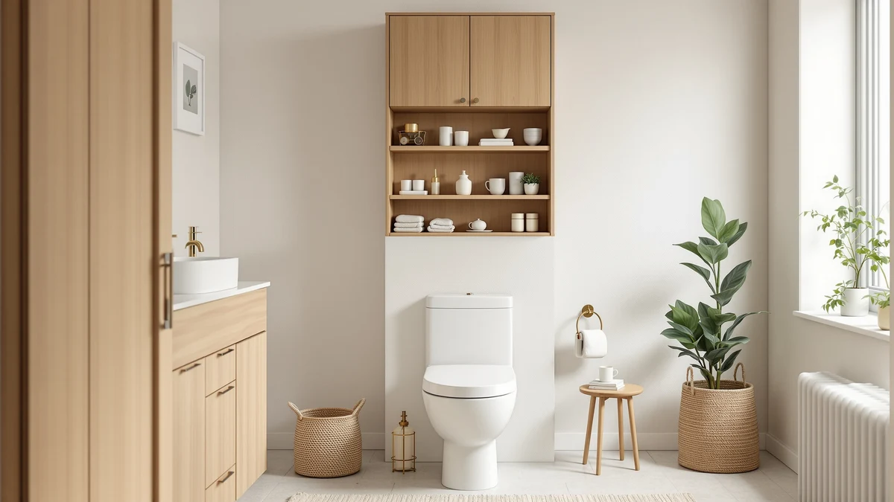

Quick Answer
This Meilocar over the toilet review's short answer: it is a freestanding metal-and-wood tower that stands over a standard toilet tank without wall anchors, priced at $74.99. It suits narrow bathrooms that need vertical storage without drilling, though the DUMOS or Homhedy cost a few dollars less if you want a cabinet with enclosed doors instead.
Our pick: Meilocar Over the Toilet Storage, $74.99 Check Price on Amazon
Things to Know Before You Buy
- The Meilocar is a floor-standing tower, not a tension-pole shelf, so it needs floor space on both sides of the toilet rather than ceiling clearance.
- At 23.6 inches wide and 9.1 inches deep, it fits narrower nooks than a full-depth farmhouse cabinet like the Homhedy.
- None of the four units in this comparison, the Meilocar, DUMOS, Homhedy, or ChooChoo, carry a published Amazon rating or review count.
- The metal-and-wood build puts the Meilocar in the same material class as the pricier cabinets here rather than an all-wire rack.
- Prices across all four options in this Meilocar over-the-toilet review span about $8, from $71.98 to $79.99, so footprint and finish matter more than budget.
This Meilocar over the toilet review compares the $74.99 freestanding storage tower against three cabinet-style alternatives on price, footprint, and material, since none of the four listings publish a star rating on Amazon.
The short version: the Meilocar earns its price by fitting into narrower bathrooms than the Homhedy or ChooChoo cabinets, without any wall drilling required. If you have the floor depth for a full cabinet and want your toiletries hidden behind doors, the Homhedy or ChooChoo is the better long-term fit instead. All four options land within an $8 price band, so this comparison turns on footprint, material, and finish rather than on which listing is cheapest.
Why You Should Trust Us
This Meilocar over the toilet review is written by Ilane Tall, who covers bathroom storage for Best Bathroom Storage. We do not run a fake testing lab, and we do not claim to have installed the Meilocar or any of its competitors in our own bathrooms. Instead, we compare manufacturer specifications, published dimensions, and pricing across the storage units sold in the same over-the-toilet category, and we disclose our affiliate relationships clearly at the bottom of every page.
You will not find invented star ratings anywhere in this Meilocar over-the-toilet storage review. Amazon does not publish a rating or review count for the Meilocar, the DUMOS, the Homhedy, or the ChooChoo listings we compare it against, so we say that plainly rather than filling the gap with a made-up number. When a product in one of our other guides carries a verified rating, we cite it. Here, none of the four do, so we lean on confirmed specs and price instead. We also keep our affiliate tag out of the specs above so the numbers you see match what Amazon itself lists for each product.
How We Compared
To put together this Meilocar over the toilet review, we researched the manufacturer's listed material, dimensions, and price for the Meilocar and cross-checked those figures against three other over-the-toilet and floor-cabinet storage units sold in the same $71 to $80 price band. We read through the product details Amazon publishes for each listing rather than relying on marketing copy, and we compared footprint, material, and price side by side instead of ranking products on subjective feel. Where a listing left a spec blank, such as shelf count or weight capacity, we noted the gap rather than guessing at a number.
We also weighed installation style as its own factor, since a freestanding tower like the Meilocar solves the same storage problem as a wall-mounted or floor cabinet in a different way. A cabinet like the Homhedy or ChooChoo needs floor space too, but its enclosed doors hide contents that stay visible on an open frame. Neither approach is better for every bathroom, so the comparisons below weigh footprint and finish rather than declaring one style the universal winner. Buyers shopping this category tend to know already whether they want open or enclosed storage, so we built the comparison around that choice instead of around a single overall ranking.
Overview & Specs

Meilocar Over the Toilet Storage
What we like
- Floor-standing design needs no wall anchors or drilling, unlike a mounted cabinet
- 23.6-inch width fits narrower nooks than a full-depth farmhouse cabinet
- Metal-and-wood build matches the material of the pricier cabinets in this comparison
- At $74.99, it sits mid-pack on price among the four units we compared
Flaws but not dealbreakers
- Amazon's listing does not publish a shelf count or weight rating for this ASIN
- No rating or review count is published for this ASIN, so you are weighing specs rather than buyer consensus
- At 9.1 inches deep, it holds less than a full-depth cabinet like the Homhedy or ChooChoo
| Material | Metal / wood |
| Size | 23.6 inches x 9.1 inches x 74.8 inches |
The Meilocar Over the Toilet Storage is a freestanding metal-and-wood tower built to stand over a toilet tank rather than mount to a wall. At 23.6 inches wide, 9.1 inches deep, and 74.8 inches tall, it is sized for narrow nooks where a full-depth cabinet would not clear the door swing, and its width sits close to that of a standard toilet tank. Because it stands on the floor rather than clamping between the ceiling and floor like a tension-pole shelf, it takes up permanent floor space on either side of the toilet instead. That trade-off suits bathrooms with a solid, level floor more than it suits ones with a sloped or uneven tile base.
Amazon's own listing for this ASIN does not break down shelf count or per-shelf weight capacity, so we compare what is confirmed: material, dimensions, and price. At $74.99, the Meilocar sits within $5 of every other unit in this Meilocar over-the-toilet review, which makes the choice more about footprint and finish than about budget. Its metal-and-wood build puts it in the same material category as the Homhedy and ChooChoo cabinets it competes against here, rather than the bare-wire racks that dominate the cheaper end of this category. The 74.8-inch height also reaches well above the toilet tank, which leaves room to stack items on upper tiers without them crowding the flush handle below.
What We Liked
The clearest advantage of the Meilocar over the toilet storage tower is its footprint. At 23.6 inches wide, it fits into bathrooms where a 30-inch farmhouse cabinet like the Homhedy would crowd a door swing or block a towel bar. Because it stands on the floor rather than clamping to the ceiling, you also skip the ceiling-height math that tension-pole shelves require. That makes it a more forgiving install for older bathrooms with textured or uneven ceilings.
Price is competitive rather than cheapest. At $74.99, the Meilocar costs more than the DUMOS or Homhedy but less than the ChooChoo, which puts it in the middle of this four-way comparison. For a metal-and-wood build, that price lines up with what the other cabinets here charge for similar materials, so you are not paying extra simply for the Meilocar name. That middle-of-the-pack pricing also means you are not sacrificing much either way if footprint, not cost, is what decides your purchase.
What Could Be Better
The biggest gap in this Meilocar over-the-toilet review is data, not design. Amazon does not publish a shelf count, weight rating, or review count for this ASIN, which makes it harder to judge storage capacity before you buy than it is for products with a fuller spec sheet. If you want to see verified owner feedback before committing, you will not find it on this listing.
At 9.1 inches deep, the Meilocar also holds less than a full-depth cabinet like the Homhedy or ChooChoo, so bulky items such as large tissue boxes or stacked towels may not fit as easily as they would in a deeper enclosed unit. If concealed storage matters more to you than a narrow footprint, that depth trade-off is worth weighing before you buy. And because the frame stands on the floor rather than mounting to a stud, you should confirm your bathroom floor is level before setup, since an uneven surface can leave a tall, narrow tower less stable than a squat, wide cabinet.
Who Is It For?
The Meilocar over the toilet storage tower fits best in a narrow bathroom where a wide cabinet will not clear the door or a towel bar, and where you would rather avoid drilling into a wall. It also suits renters who want a unit they can take with them rather than one bolted to the wall studs, since moving the Meilocar out at the end of a lease leaves no anchor holes to patch.
If you own your bathroom, have wall space to spare, and want your toiletries fully hidden behind doors, the Homhedy or ChooChoo cabinet is the better long-term fit in this comparison. A family that plans to stay in one home for years and wants enclosed storage gets more from either of those two than from the open footprint of the Meilocar. Shoppers who split the difference, wanting some concealed storage but not a full 30-inch cabinet, may find the DUMOS worth comparing directly against the Meilocar on price alone.
Alternatives to Consider
If the Meilocar over-the-toilet storage tower is not the right fit for your bathroom, these three alternatives from the same price range give you a different footprint or finish. Each one trades the Meilocar's narrow profile for either a lower price or a more enclosed, cabinet-style build, so weigh that against your own floor space before choosing.

Editor's Pick
DUMOS Over the Toilet Storage
The closest price match to the Meilocar in this comparison, at $2.24 less, for buyers who want another over-the-toilet storage option without paying more.
$72.75
Check Price on Amazon
Best Value
Homhedy Farmhouse Bathroom Storage Cabinet
A farmhouse-style storage cabinet priced $3.01 below the Meilocar, worth considering if you want enclosed doors instead of an open frame.
$71.98
Check Price on Amazon
Premium Choice
ChooChoo Bathroom Floor Cabinet Modern
The priciest option here at $79.99, a modern floor cabinet for buyers who want a cleaner-lined finish and don't mind paying $5 more than the Meilocar.
$79.99
Check Price on AmazonFrequently Asked Questions
Does the Meilocar Over the Toilet Storage fit a standard toilet?
Yes, for most standard toilets. At 23.6 inches wide and 9.1 inches deep, it is sized to straddle a standard tank, though you should measure the floor space beside your toilet before ordering since the unit needs floor clearance on both sides, not only overhead room.
How much weight can the Meilocar over the toilet storage hold?
Amazon's listing does not publish a per-shelf weight rating for this ASIN, so we cannot cite a specific number. Treat everyday bathroom items like towels and toiletries as the safe range rather than assuming it can carry the load of a full-depth cabinet.
Is the Meilocar better than a cabinet like the Homhedy or ChooChoo?
It depends on your bathroom layout and how much you want hidden. The Meilocar's narrower frame fits tighter nooks and costs less than the ChooChoo, while the Homhedy and ChooChoo cabinets hide contents behind doors but need more floor depth. Choose the Meilocar for a narrow space and choose a cabinet if you want enclosed storage and have the depth to spare.
Final Verdict
This Meilocar over the toilet review comes down to footprint. At $74.99, the Meilocar earns its place by fitting into narrower bathrooms than the Homhedy or ChooChoo cabinets, without any wall drilling required. If you have a tight nook beside your toilet and do not need enclosed storage, the Meilocar is the pick. If you have the floor depth to spare and want your toiletries fully hidden, the Homhedy or ChooChoo cabinet is worth the small price difference instead.